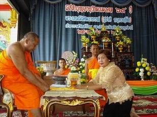
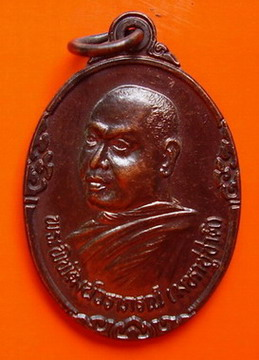
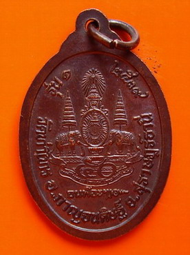

|
๑๔. มีงานศึกษาสงเคราะห์ดังนี้.-
๑. พ.ศ.๒๕๒๕
ได้จัดตั้งกองทุนสงเคราะห์นักเรียนชั้นประถมศึกษา ของวัดท่าไทร
ขึ้น ปัจจุบันมีเงินทุนฝากที่ธนาคาร กรุงไทย สาขา สุราษฎร์ธานี
บัญชีเลขที่ ๘๐๗-๑-๖๐๔๒๒-๔ มีเงินทุนจำนวน ๒๒๐,๙๖๗.๙๙ บาท ( เงิน
สองแสน สองหมื่น เก้าร้อย หกสิบเจ็ดบาท เก้าสิบเก้าสตางค์)
ในภาพ พระเทพพิพัฒนาภรณ์
กำลังให้โอวาทก่อนมอบทุนสร้างชีวิตในงานแต่งงานทุกงานแต่งที่ท่านเป็นประธาน
ปีละประมาณกว่า ๑๐๐ คู่ชีวิตสมรส
เพื่อให้คู่บ่าวสาวร่วมกันเปิดบัญชีครอบครัวและฝากคนละ ๑ บาททุกวัน
จนกระทั่งครบ ๒๐ ปี จึงให้บ่าวสาวนำเงินมาใช้
๑๕. งานเผยแผ่
๑. พ.ศ.
๒๕๒๔ เป็น พระธรรมทูต อำเภอกาญจนดิษฐ์
๒. พ.ศ. ๒๕๒๕ เป็น ผู้อบรมศีลธรรมแก่นักเรียน โรงเรียนวัดท่าไทร
๓. พ.ศ. ๒๕๒๖ เป็นประธานหน่วย อ.ป.ต. ประจำตำบลท่าทองใหม่ จนถึงปัจจุบัน
๔. พ.ศ. ๒๕๒๘ จัดให้มีการบวชสามเณรฤดูร้อน ปีละ ๖๐ รูป ขึ้นไป
ทุกปี จนถึงปัจจุบัน
๕. พ.ศ. ๒๕๒๘ จัดให้มีการบวชศีลจาริณี(หญิงผู้ประพฤติธรรม)ปีละ
๕๐ คนในเดือน สิงหาคม ของทุกปี จนถึงปัจจุบัน
๖. พ.ศ. ๒๕๓๒ เป็นรองหัวหน้าพระธรรมทูต ศูนย์งานจังหวัดสุราษฎร์ธานี
ได้รับมอบหมายจาก เจ้าคณะจังหวัดสุราษฎร์ธานี ในฐานะหัวหน้าพระธรรมทูต
อบรมพระธรรมทูต และติดตามการ ปฏิบัติงานของพระธรรมทูต ทั้งจังหวัดจนถึงปัจจุบัน
๗. มีการทำพิธีมาฆบูชา เป็นประจำทุกปี มีผู้มาร่วมประชุมทำพิธี
เป็นพระภิกษุ สามเณร ๑๕ รูป ประชาชน จำนวนประมาณ ๓๕๐ คน
๘. มีการทำพิธีวิสาขบูชา เป็นประจำทุกปี มีผู้มาร่วมประชุมทำพิธี
เป็นพระภิกษุ สามเณร ๒๕ รูป ประชาชนประมาณ ๕๕๐ คน
๙. มีการทำพิธีอาสาฬหบูชา เป็นประจำทุกปี มีผู้มาร่วมประชุมทำพิธี
เป็นพระภิกษุสามเณร จำนวน ๔๕ รูป ประชาชนจำนวนประมาณ ๕๐๐ คน
๑๐. มีการอบรมพระภิกษุสามเณรหลังทำวัตร-สวดมนต์เย็น ในวันพระ ๘
ค่ำ ๑๕ ค่ำ
๑๑. มีการอบรมศีลธรรมแก่ประชาชน เป็นประจำ ในวันพระ เวลาบ่าย และอบรมศีลธรรมแก่
นักเรียน ในโรงเรียนต่าง ๆ ตามที่ ทางโรงเรียนนิมนต์มา
๑๒. มีผู้มารักษาศีลฟังธรรมที่วัด ตลอดปี จำนวน ๔๕ คน
๑๓. มีกิจกรรมเกี่ยวกับการเผยแผ่ ดังนี้.-
- ด้วยการจัดตั้งห้องสมุดขึ้นในวัด
และจัดหาหนังสือธรรมะประเภทต่าง ๆ ให้ประชาชน ยืมอ่าน
- พิมพ์หนังสือธรรมะแจกในโอกาสสำคัญ เช่นงานประจำปีของวัด งานวันเกิด
๑๔. มีความร่วมมือกับทางคณะสงฆ์เกี่ยวกับการเผยแผ่
คือ.-
(๑).
เข้าร่วมประชุมพระธรรมทูตจังหวัด ในการวางแผนงานออกธรรมทูตประจำปี
(๒). ร่วมกับพระธรรมทูตจังหวัดออกปฏิบัติงานในต่างอำเภอในบางโอกาส
(๓) ปฎิบัติหน้าที่แทนเจ้าคณะจังหวัดในการกำกับงานพระธรรมทูต
และนำพระธรรมทูตออกปฏิบัติงานประจำปี พร้อมด้วยให้นโยบาย
(๔) สนองนโยบายของคณะสงฆ์ระดับสูงในการปฏิบัติงานพระธรรมทูต
๑๕ . มีความร่วมมือกับทางราชการในการเผยแผ่
คือ.-
(๑).
จัดพระธรรมทูต ออกอบรมศีลธรรมในโรงเรียน ตามโครงการส่งเสริมศีลธรรมแก่-
เยาวชน ของสำนักงานศึกษาธิการจังหวัดสุราษฎร์ธานี
(๒). ร่วมกิจกรรมกับทางราชการในการออกเยี่ยมเยียนประชาชนในถิ่นกันดาร
๑๖. วัดท่าไทร
อำเภอกาญจนดิษฐ์ มีผู้มาทำบุญที่วัดเป็นประจำ จำนวน ๒๐๐ คน
ในภาพ พระเทพพิพัฒนาภรณ์
กำลังให้โอวาทก่อนมอบทุนเรียน ๔ ปี (ทุนให้เปล่า)จนจบปริญญาตรี
ครั้งละ ๓ ทุน
แก่นักศึกษามหาวิทยาลัยราชภัฏสุราษฎร์ธานี ๒๗๒ ม.๙ ต.ขุนทะเล อ.เมือง
จ.สุราษฎร์ธานี ๘๔๑๐๐
(นางสาวจรรยาภรณ์
ศิริกาญจน์ โปรแกรมวิชา เคมี,นายไพรรัตน์ คงสร้อย โปรแกรมวิชา นิติศาสตร์,นายเอกศักดิ์
บุญศรีวงศ์สกุล โปรแกรมวิชา สาธารณชุมชน)
๑๖. งานสาธารณูปการ
ตั้งแต่ได้ดำรงตำแหน่งเจ้าอาวาสวัดท่าไทร
เป็นต้นมา ได้ดำเนินการก่อสร้างเสนาสนะ และ บูรณะเสนาสนะ พัฒนาวัดให้ร่มรื่น
โดยลำดับมา ดังนี้.-
(๑) งานก่อสร้างถาวรวัตถุ
ภายในวัด นับตั้งแต่ พ.ศ. ๒๕๓๖ ถึงปัจจุบัน ดังนี้.-
-พ.ศ. ๒๕๓๖
ดำเนินจัดซื้อที่ดินให้เป็นที่ธรณีสงฆ์ของวัดท่าไทร จำนวน ๗๐ ไร่
ที่ตำบลตะปาน อำเภอพุนพิน จังหวัดสุราษฎร์ธานี เขตติดต่ออำเภอเคียนซา
ขณะนี้ได้ปลูกยางพารา มาประมาณ ๑๒ ปี และได้รับผลแล้ว ซึ่งเจ้าของเดิมได้ขายให้ในราคาที่ต้องการถวายให้วัด
ไร่ละ ๕๐,๐๐๐. บาท x ๗๐ ไร่ รวมเป็นเงิน ๓,๕๐๐,๐๐๐. บาท (เงิน
สามล้าน ห้าแสนบาทถ้วน)
-พ.ศ. ๒๕๓๗
ดำเนินการก่อสร้าง กุฏิสงฆ์ จำนวน ๑ หลัง ลักษณะทรงไทยบังกะโล
เป็นอาคารคอนกรีต เสริมเหล็ก ๒ ชั้น หลังคามุงด้วยกระเบื้องลอนคู่
ทาสีทั้งหลัง ขนาดกว้าง ๖ เมตร ยาว ๘ เมตร แล้วเสร็จบริบูรณ์ ราคาค่าก่อสร้าง
เป็นจำนวนเงิน ๑๖๘,๙๕๕. บาท (เงิน หนึ่งแสน หกหมื่น แปดพัน เก้าร้อยห้าสิบห้าบาทถ้วน)
- พ.ศ.
๒๕๓๘ ดำเนินการก่อสร้าง โรงเรียนปริยัติธรรม ๑ หลัง ขนาดกว้าง
๘ เมตร ยาว ๑๒ เมตร เป็นอาคาร ไม้ ครึ่ง และ คอนกรีตเสริมเหล็กครึ่ง
๒ ชั้น หลังคามุง ด้วยกระเบื้องลอนคู่ ทาสีทั้งหลัง แล้วเสร็จบริบูรณ์
ราคาค่าก่อสร้าง เป็นจำนวนเงิน ๘๔๒,๓๕๐. บาท (เงิน แปดแสน สี่หมื่น
สองพัน สามร้อยห้าสิบบาทถ้วน)
รวมผลงานค่าก่อสร้างทุกรายการ
เป็นจำนวนเงิน ๔,๕๑๑,๓๐๕. บาท (เงิน สี่ล้าน ห้าแสน หนึ่งหมื่น หนึ่งพัน
สามร้อย ห้าบาทถ้วน)
(๒) งานบูรณะปฏิสังขรณ์ถาวรวัตถุภายในวัด
ตั้งแต่ พ.ศ. ๒๕๓๗ ถึงปัจจุบัน ดังนี้.-
- พ.ศ.
๒๕๓๗ ดำเนินการบูรณะศาลาการเปรียญ ๑ หลัง เป็นอาคารไม้ ชั้นเดียว
พื้นปูนขัดมันขนาดกว้าง ๑๔ เมตร ยาว ๓๐ เมตร ด้วยการเปลี่ยนกระเบื้องหลังคา
และปรับพื้นบางส่วน ต่อเติมอาคาร และทำห้องน้ำ ห้องสุขา ทาสีทั้งหลัง
แล้วเสร็จบริบูรณ์ ใช้การได้สมบูรณ์ในปัจจุบันราคาค่าก่อสร้าง
เป็นจำนวนเงิน ๒๘๒,๗๕๐.๐๐ บาท (เงิน สองแสน แปดหมื่น สองพัน เจ็ดร้อย
ห้าสิบบาทถ้วน)
- พ.ศ.
๒๕๓๗-๒๕๔๐ ดำเนินการบูรณะอุโบสถวัดท่าไทร จำนวน ๑ หลัง ลักษณะทรงไทย
ของ กรมศิลปกร ขนาดกว้าง ๙ เมตร ยาว ๒๒ เมตร ด้วยการเปลี่ยนโครงสร้างหลังคา
มุงด้วยกระเบื้องเคลือบ ติดช่อฟ้า ใบระกา ฯลฯ วาดภาพพุทธประวัติ
ภายในทั้งหมด และทาสีทั้งหลัง เสร็จเรียบร้อยสมบูรณ์ ราคาค่าบูรณะ
เป็นจำนวนเงิน ๓,๑๙๒,๗๕๐. บาท (เงิน สามล้าน หนึ่งแสน เก้าหมื่น
สองพัน เจ็ดร้อย ห้าสิบบาทถ้วน)
รวมผลงานค่าบูรณะปฏิสังขรณ์ทุกรายการ
เป็นจำนวนเงิน ๓,๔๗๕,๕๐๐. บาท (เงิน สามล้าน สี่แสน เจ็ดหมื่น
ห้าพัน ห้าร้อย บาทถ้วน)
รวมผลงานค่าก่อสร้าง
และบูรณะปฏิสังขรณ์ถาวรวัตถุในวัดทุกรายการ เป็นจำนวนเงินทั้งหมด
๗,๙๘๖,๘๐๕. บาท (เงิน เจ็ดล้าน เก้าแสน แปดหมื่น หกพัน แปดร้อย
ห้าบาทถ้วน)
(๔) มีการพัฒนาวัด
ดังนี้ คือ.-
๑.
ด้านปกครอง ได้จัดให้มีผู้ช่วยเจ้าอาวาส เพื่อช่วยเหลือในกิจต่าง
ๆ เช่น การทำวัตร สวดมนต์ การอบรมพระภิกษุ-สามเณร นวกะ ประชาชนฯลฯ
ในเวลาที่เจ้าอาวาสไม่อยู่
๒.
ด้านการศึกษา ได้จัดให้มีการเรียนการสอนทั้ง ปริยัติธรรม แผนกธรรมบาลี
และธรรมศึกษา โดยมอบหมายให้พระภิกษุรูปหนึ่ง ทำหน้าที่เป็นอาจารย์ใหญ่
๓.
ด้านการเผยแผ่ ได้จัดให้มีการอบรมศีลธรรม โดยการเทศนา สนธนาธรรม
แก่ประชาชน นักเรียน ในวันพระ วันสำคัญทางศาสนาเป็นประจำ
๔.
ด้านการสาธารณูปการ ได้จัดสร้างเสนาสนะ เช่น กุฎิ ศาลาการเปรียญ
อุโบสถ ฯลฯ และปรับปรุง รักษา ความสะอาดวัดอยู่เสมอ ปลูกต้นไม้ หลายชนิด
ทั้งไม้ผล และไม้ที่ให้ร่มเงา จนปรากฏแก่ประชาชนทั่วไปว่า วัดท่าไทร
บริเวณวัดสะอาด มีกำแพงโดยรอบ จนกระทั่งได้รับยกย่องจากกรมการศาสนา
ให้เป็นวัดพัฒนาตัวอย่าง เมื่อ พ.ศ. ๒๕๓๓

นางลัดดาวัลย์
สุภากุล กำลังถวายรถเบ้นซ์ รุ่น E๒๘๐ ทะเบียน กค ๗๗๔ สุราษฎร์ธานี
แด่..พระเทพพิพัฒนาภรณ์ เพื่อความสะดวดแก่การปฏิบัติศาสนกิจ
เมื่อวันที่ ๒๖ สิงหาคม ๒๕๕๒
๑๗. งานเจ้าคณะ
พ.ศ. ๒๕๔๑
เป็น เจ้าคณะจังหวัดสุราษฎร์ธานี ได้ดำเนินการงานในหน้าที่เพื่อความเรียบร้อยดีงามของคณะสงฆ์
และการเผยแผ่พระศาสนา ตามตำแหน่งหน้าที่ ด้วยความเรียบร้อยทุกประการ
โดยเฉพาะงานในหน้าที่หลักของเจ้าคณะปกครอง ๒ ประการ ดังนี้.-
(๑)
งานตรวจการคณะสงฆ์ ในเขตที่ตนปกครอง
ตั้งแต่ได้รับการแต่งให้เป็นเจ้าคณะจังหวัดสุราษฎร์ธานี ได้ออกตรวจตราวัดในปกครอง
และแนะนำเจ้าอาวาส พระภิกษุสามเณร ในวัดให้ปฏิบัติตามหลักพระธรรมวินัย
รักษาความสะอาดบริเวณของวัด ตลอดถึงเสนาสนะเสมอมา โดยออกตรวจตามความสะดวกของโอกาสที่จะอำนวย
เดือนละครั้งบ้าง ๓ เดือนต่อครั้งบ้าง แต่ถ้าวัดใดมีอธิกรณ์เกิดขึ้นก็จะรีบเดินทางไปเป็นกรณีพิเศษ
(๒)
งานจัดประชุมพระสังฆาธิการ ในเขตที่ตนปกครอง
ตั้งแต่ได้รับแต่งตั้งให้ดำรงตำแหน่งเจ้าคณะจังหวัดสุราษฎร์ธานี
มาแล้ว ได้ประชุมพระสังฆาธิการประจำปี ทุกครั้งของจังหวัด พร้อมด้วยการจัดภัตตาหารถวาย
และได้ดำเนินการสนองงานมาตามลำดับดังนี้.-
๑.
มีการประชุมสัมมนาพระสังฆาธิการระดับวัด ปีละ ๒ ครั้ง ที่วัดท่าไทร
ตำบลท่าทองใหม่ อำเภอกาญจนดิษฐ์
๒.
มีการประชุมสัมมนาพระสังฆาธิการระดับอำเภอตำบล ของจังหวัด ปีละ
ครั้ง บ้าง บางปี ประชุม ๒ ครั้ง แล้วแต่จังหวัดจะกำหนด
๓.
มีการประชุมสัมมนาพระอุปัชฌาย์ ปีละ ๑ ครั้ง ตามที่จังหวัดกำหนด
การประชุมดังกล่าว คณะสงฆ์จังหวัดได้ปฏิบัติตามลำดับมา
ปี พ.ศ. ๒๕๔๑
นี้ ได้ช่วยเหลือราชการ (กรมการศาสนา ) รับภาระจัดสถานที่และ ภัตตาหาร
เพื่อรับเจ้าคณะใหญ่หนใต้ และภิกษุสามเณร พร้อมด้วยผู้มาร่วมในงาน
จำนวน ๑๘๕ รูป ในพิธีทรงตั้งเปรียญธรรม ๓ ประโยค และมอบวุฒิบัตรบาลี
แก่พระภิกษุสามเณร ของคณะสงฆ์หนใต้ ประจำปี ๒๕๔๑ ในวันที่ ๒ กรกฎาคม
ตั้งแต่ พ.ศ.
๒๕๓๗ ปัจจุบัน สนองงานคณะสงฆ์ ด้านการศึกษา ด้วยการเป็นเจ้าภาพจัดอบรมนักเรียนบาลีก่อนสอบ
ในประโยค ๑-๒ ป.ธ. ๓-๕ ของคณะสงฆ์จังหวัด และจังหวัดใกล้เคียง ปีละ
จำนวน ๑๐๐-๑๕๐ รูป อบรม ปี ละ ๑๕ วัน ก่อนสอบ รับภาระจัดหาตตาหาร
ค่าใช้จ่ายในการอบรมทุกอย่าง ใช้จ่ายในการนี้ปีละ ๑๕๐,๐๐๐.- ๒๐๐,๐๐๐.
บาท ทุกปี
รวมค่าใช้จ่ายในการอบรมบาลีก่อนสอบตั้งแต่ปี
๒๕๓๗ ถึงปัจจุบันเป็นเวลา ๒๕๔๑ เป็นเวลา ๕ ปี สิ้นค่าใช้จ่าย จำนวน
๖๒๕,๐๐๐. บาท (เงิน หกแสน สองหมื่น ห้าพันบาทถ้วน)
ในภาพ พระเทพพิพัฒนาภรณ์
กำลังทำบุญตักบาตรในวันทำบุญฉลองอายุวัฒนมงคล
ทุกเช้าของวันที่ ๒๖ สิงหาคม ของทุกปี
โดยมี พรมหาบุญโฮม ปริปุณฺณสีโล (ไชยฤทธิ์) คอยถวายความสะดวก
๑๘. ข้อมูลการปกครองคณะสงฆ์จังหวัดสุราษฎร์ธานี
ภาค ๑๖
๑. มีวัดในปกครอง
จำนวน ๒๗๕ วัด
๒. ที่พักสงฆ์ จำนวน ๑๐๗ แห่ง
๓. มีคณะอำเภอ จำนวน ๑๗ อำเภอ ๔. มีคณะตำบล จำนวน ๔๙ ตำบล
๑๙. งานพิเศษ
๑.
พ.ศ. ๒๕๓๗ เป็นกรรมการจัดสร้างตึกโรงพยาบาลอำเภอกาญจนดิษฐ์
๒.
พ.ศ. ๒๕๓๗ วันที่ ๑๐-๑๑ พฤษภาคม เป็นเจ้าภาพจัดสถานที่ประชุม ที่พัก
พร้อมด้วยจัดภัตตาหารถวาย ในการประชุมสัมมนาพระสังฆาธิการ ระดับ
อำเภอ ตำบล และเลขานุการ ที่เจ้าคณะภาค ๑๖ จัดขึ้น ที่วัดท่าไทร
เป็นเวลา ๒ วัน
๓.
พ.ศ. ๒๕๓๗ วันที่ ๑๓-๑๖ พฤษภาคม เป็นเจ้าภาพจัดสถานที่ประชุม ที่พัก
และจัดภัตตาหาร ถวายในการประชุมสัมมนา พระอุปัชฌาย์ ที่กรมการศาสนาจัดขึ้นที่วัดท่าไทร
อำเภอกาญจนดิษฐ์ เป็นเวลา ๔ วัน
๔.
พ.ศ. ๒๕๓๗ วันที่ ๑๓ - ๑๕ สิงหาคม เข้าประชุมสัมมนาพระสังฆาธิการระดับวัด
ของ คณะสงฆ์จังหวัดสุราษฎร์ธานี ณ วัดท่าไทร ตำบลท่าทองใหม่ อำเภอ
กาญจนดิษฐ์ เป็นเวลา ๓ วัน
๕.
พ.ศ. ๒๕๓๗ เข้าร่วมประชุมสัมมนาปัญหาสุขภาพจิต ณ โรงพยาบาลสวนสราญรมย์
อำเภอพุนพิน จังหวัดสุราษฎร์ธานี
๖.
พ.ศ. ๒๕๓๗ เข้าร่วมประชุมสัมมนางานการจัดการศึกษาพระปริยัติธรรม
ที่กลุ่มครูสอน พระปริยัติธรรม ๑๔ จังหวัด ภาคใต้ จัดขึ้น ระหว่างวันที่
๓-๕ กันยายน ณ วัดละไม อำเภอเกาะสมุย เป็นเวลา ๓ วัน
๗.
พ.ศ. ๒๕๓๙ เข้าร่วมประชุมสัมมนางานในหน้าที่พระวินยาธิการ ซึ่งกรมการศาสนาจัดขึ้น
ระหว่างวันที่ ๒๘-๓๐ มีนาคม เป็นเวลา ๓ วัน ณ วัดแจ้ง อำเภอเกาะสมุย
๘.
พ.ศ. ๒๕๓๙ วันที่ ๑๗ - ๑๘ เมษายน ประชุมสัมมนาพระสังฆาธิการของคณะสงฆ์ภาค
๑๖ ณ วัดราชโอรสาราม เขตจอมทอง กรุงเทพมหานคร
๙.
พ.ศ. ๒๕๓๙ วันที่ ๑๙-๒๐ มิถุนายน ประชุมสัมมนาพระสังฆาธิการของคณะสงฆ์หนใต้
ณ วัดชัยมงคล อำเภอเมือง ฯ จังหวัดสงขลา
๑๐
พ.ศ. ๒๕๓๙ วันที่ ๒๑ พฤษภาคม เข้าประชุมคณะกรรมการ การศึกษาพระปริยัติธรรม
แผนกธรรม-บาลี พิจารณาจัดสรรเงินอุดหนุน การศึกษาปริยัติธรรม ปี
๒๕๓๙ ที่ สนง.จจ. สุราษฎร์ธานี วัดไตรธรรมาราม อำเภอเมืองสุราษฎร์ธานี
๑๑
พ.ศ. ๒๕๔๐ วันที่ ๒๒ พฤษภาคม เข้าร่วมประชุมพิจารณาจัดสรรเงินอุดหนุน
การศึกษา ปริยัติธรรม ปี ๒๕๔๐ ที่ วัดไตรธรรมาราม อำเภอเมืองสุราษฎร์ธานี
๑๒
ตั้งแต่ พ.ศ. ๒๕๓๔ เป็นต้นมา ในวันที่ ๙ มกราคม ของทุกปี ได้เข้าร่วมประชุมพระสังฆาธิ-
การระดับวัด ที่เจ้าคณะจังหวัดจัดประชุม เป็นเวลา ๑ วัน ที่วัดไตรธรรมาราม
อำเภอเมือง จังหวัดสุราษฎร์ธานี
|

เหรียญพระเทพพิพัฒนาภรณ์ รุ่น ๑ พ.ศ.
๒๕๓๙
ด้านหน้า
|

เหรียญพระเทพพิพัฒนาภรณ์
รุ่น
๑ พ.ศ. ๒๕๓๙
ด้านหลัง
|
|
เหรียญพระเทพพิพัฒนาภรณ์
รุ่น
๑ พ.ศ. ๒๕๓๙
ซึ่งจัดสร้างขึ้นมาเพื่อเป็นที่ระลึก
ในโอกาสฉลองครบรอบ ๕๐ ปี ครองราชย์
|
|
|
|
๒๐. สมณศักดิ์
๑.
พ.ศ. ๒๕๒๑ เป็นเปรียญธรรม ๕ ประโยค
๒.
พ.ศ. ๒๕๒๗ ได้รับพระราชทานแต่งตั้งสมณศักดิ์ เป็นพระครูสัญญาบัตร
จร.ชอ. ในราชทินนามที่ พระครูศรีกาญจนาภิวัฒน์
๓.
พ.ศ. ๒๕๓๑ ได้รับพระราชทานเลื่อนสมณศักดิ์ เป็นพระครูสัญญาบัตร รจจ.
๔.
พ.ศ. ๒๕๓๖ ได้รับพระราชทานแต่งตั้งสมณศักดิ์ เป็นพระราชาคณะ ชั้นสามัญ
ในราชทินนามที่ พระพิพัฒน์วราภรณ์
๕.
พ.ศ. ๒๕๔๑ ได้รับพระราชทานแต่งตั้งสมณศักดิ์ เป็นพระราชาคณะ ชั้นราช
ในราชทินนามที่ พระราชพิพัฒนาภรณ์
๖.
พ.ศ. ๒๕๔๘ ได้รับพระราชทานแต่งตั้งสมณศักดิ์ เป็นพระราชาคณะ ชั้นเทพ
ในราชทินนามที่ พระเทพพิพัฒนาภรณ์
|